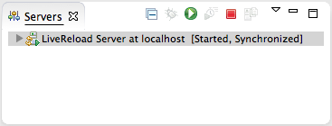
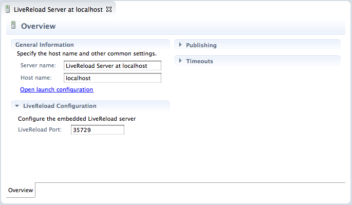
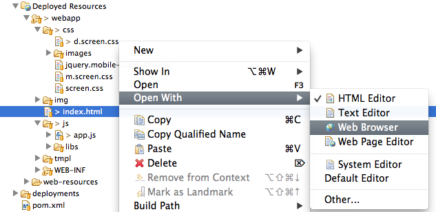

General |
|
| Directory Mode Support |
JBossTools LiveReload is a server-side implementation of the LiveReload protocol. As a user, you first need to create a "LiveReload" server in the Servers View and start it.  By default, the Livereload server and the browser extension communicate with Web Sockets over the 35729 port, but this can be configured. Then, you just have to select a file in your workspace and in the contextual menu, use the "Open With>Web Browser" command. The file will open in your default Web Browser. From there, you active the LiveReload extension (see below for instruction on how to install it on Chrome and Firefox), then each time you save the file, it is automatically refreshed in the browser. The LiveReload server will send "reload" commands to the connected Web Browser(s) each time an HTML / CSS / JavaScript or image file is changed in the workspace, so you just need a single server for all your projects. And yes, you can have multiple browsers connected at the same time and refreshed at the same time ;-) Installing the Browser ExtensionChrome users can install the v.2.0.9 extension from the Chrome Marketplace.
Firefox users may hit an issue
with the LiveReload
extension v.2.0.8: the browser disconnects just after it has
connected, which means that the server cannot push refresh commands
to it. |